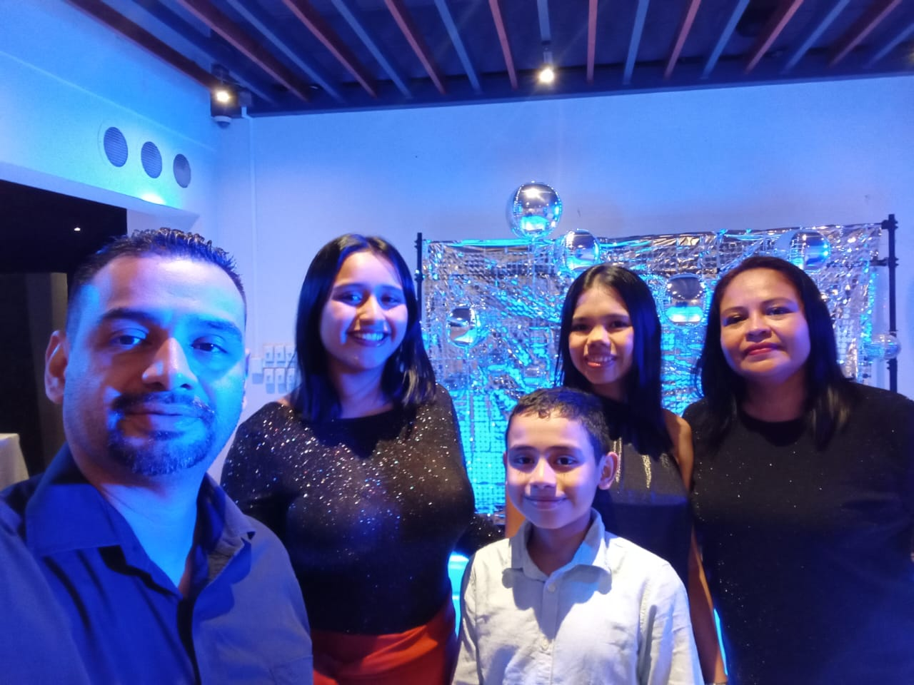
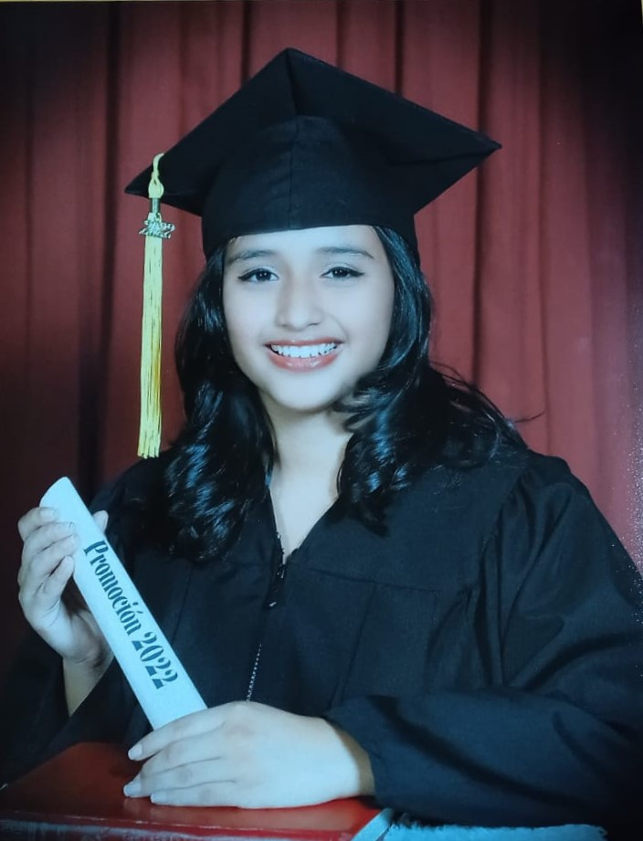
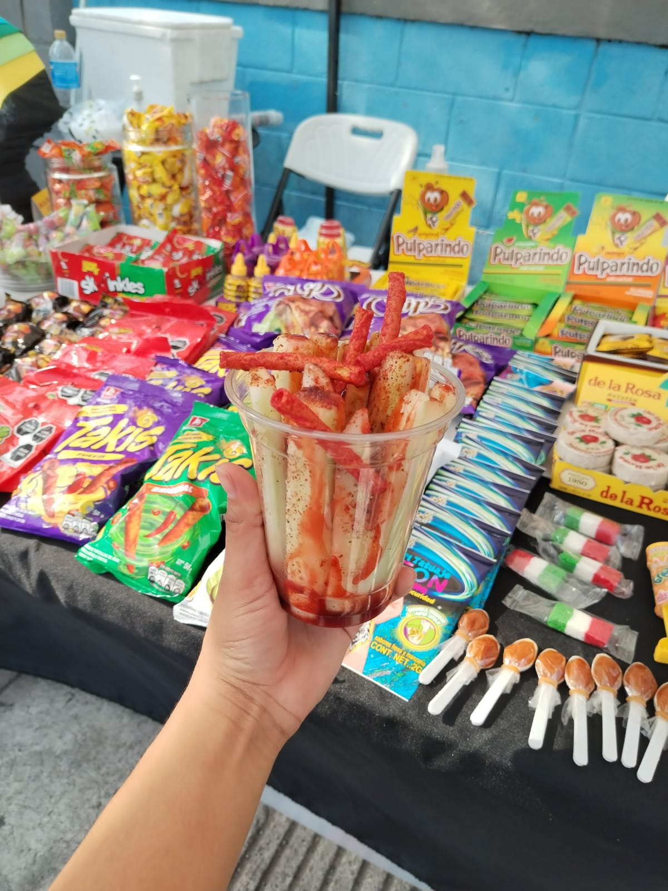
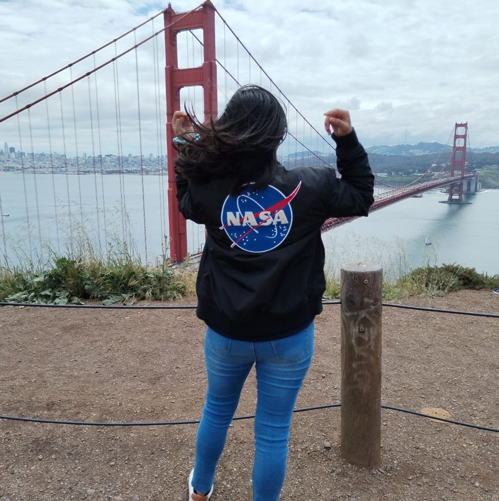

Vida Personal y Familiar
Michelle es una joven a la que le encanta escuchar musica y bailar, su banda favorita es "Morat". Su hobby favorito es leer libros de fantasia y romance, su libro favorito es
"Antes de Diciembre" de Johana Marcus. No practica ningun deporte, sin embargo, es fan de la Formula 1.
Viviana Lemys y Gerson Argueta son los padres de Michelle Argueta, tiene 2 hermanos, Ariana y Gerardo, pero ella es la hermana mayor. Le familia tiene
2 perros uno es un cocker spaniel cafecito y otro es un french blaquito.

Vida Academica
A lo largo de su vida, Michelle, ha estudiado en 3 centros educativos. El kinder y primaria lo completo en el Colegio Emaus ubicado en Lourdes Colon.
Luego desde secundaria hasta bachillerato lo realizo en el Centro Escolar Catolico Alberto Masferrer ubicado en Santa Tecla. El bachillerato que curso
Michelle era opcion contador que duro 3 años, de los cuales los primeros 2 fueron en modalidad virtual por pandemia.
Actualmente sus estudios superiores los esta realizando en la Escuela Superior de Economia y Negocios,
la carrera que eligio estudiar es Ingenieria en de Software y Negocios Digitales y va en segundo año. Tambien se le ha formado academicamente el
idioma ingles.

Vida Laboral
Michelle es una emprendedora, antes de dedicarse 100% a sus estudios tuvo 2 emprendimientos. El primero fue de jabones naturales, el producto lo
realizaba ella (las recetas, los jabones, empaques, exfoliantes, etc). El segundo emprendimiento se trata de la compra y venta de dulces mexicanos,
fruta y gomitas preparadas al estilo mexicano (tajin, chamoy, valentina, topping como churros), y chamoyadas (frozen de fruta con tajin, chamoy y gomitas).
Solia ir a ferias de emprendedores en centros comerciales y plazas para ofrecer sus productos.
Sin embargo, ha realizado una pasantia en el area de operaciones en la aeguradora SISA y tambien ha trabajado en el area de ventas de una optica.

Conclusión
Michelle espera graduarse para el 2027 y hacer un post grado. Sus expectativas laborales es trabajar en el extranjero, Ademas de que desea vijar por Europa
y poder ir a un gran premio de la Formula 1.
